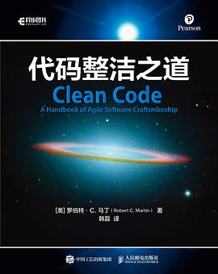

这本书围绕“什么是好代码”展开，系统讨论命名、函数设计、注释、错误处理、测试与重构等问题。 它不只是在教语法，更是在培养一种对代码质量负责的职业习惯。
它改变了我对“写完能跑就行”的看法。读完之后，我会更主动地关注代码是否易读、易改、易协作， 也开始在写作业和小项目时有意识地做拆分与整理。
“整洁代码的价值，不在炫技，而在于让后来的人也愿意继续维护它。”
《代码整洁之道》是软件工程领域非常经典的工程素养读物。它帮助开发者从“会写代码”走向“会写可持续的代码”， 对团队协作和长期项目尤其重要。